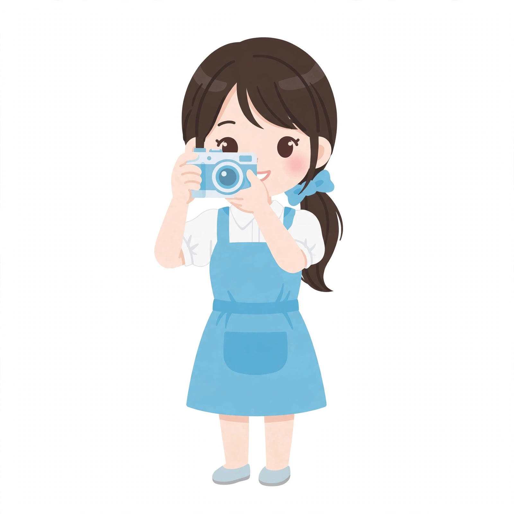

写真は「撮って終わり」じゃない
現場監督の仕事でも、フリーカメラマンとして活動していた時期も、写真は「撮って終わり」ではありませんでした。
現場の記録写真は明るさがバラバラになりがちですし、ドローンで撮った写真は、納品や報告に使える形に整えて初めて「資料」になります。私はその仕上げに、PhotoDirector 365を使っています。
私の使い方
- 現場写真の明るさ・色味の補正（暗い室内や逆光の外観を、見た目に近づける）
- ドローンで撮った写真の仕上げ（空撮はそのままだと眠い絵になりやすいので、コントラストと色を整える）
- 人物写真のレタッチ（肌の補正など、やりすぎない範囲で）
高機能なソフトは世の中にたくさんありますが、私がこれを使い続けている一番の理由は、「サブスクで常に最新版が使えて、操作で迷う時間が短い」ことです。本業の合間に触る道具は、軽くて速いことが正義だと思っています。
正直にいまいちな点
- サブスクなので、使い続ける限り費用はかかります。買い切り派の人には向きません。
- 機能が多いぶん、最初はメニューの多さに戸惑いました。使う機能はだいたい決まってくるので、慣れれば問題ありません。
向く人／向かない人
向く人：写真の補正やレタッチを、難しいことを考えずに一通りこなしたい人。ドローンや現場写真の仕上げを1本で済ませたい人。
向かない人：買い切りでないと嫌な人。印刷物のデザインまで1本でやりたい人（それは別の道具の仕事です）。
購入リンク
リンク
※価格 ¥7,700（税込）は記事作成時点・楽天市場 ヤマダ電機店の表示価格です。

ミューのひとこと：店主が毎日使っている本命ソフトです。写真の枚数が多い現場ほど、ありがたみが分かりますよ。
価格はセール等で変動します。購入前に公式・販売ページで最新条件をご確認ください。
広告・PRの表記ルールはこちらにまとめています：PR表記について（note）
← トップページに戻る